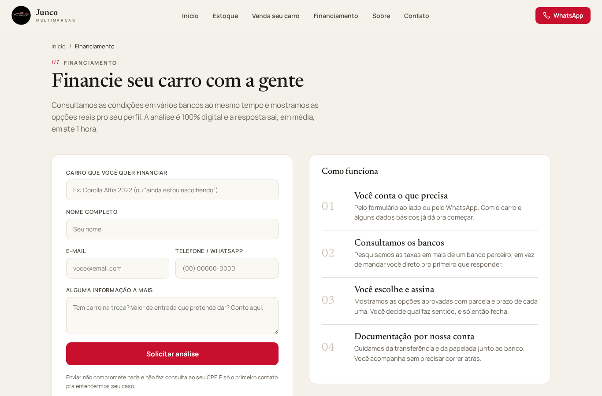
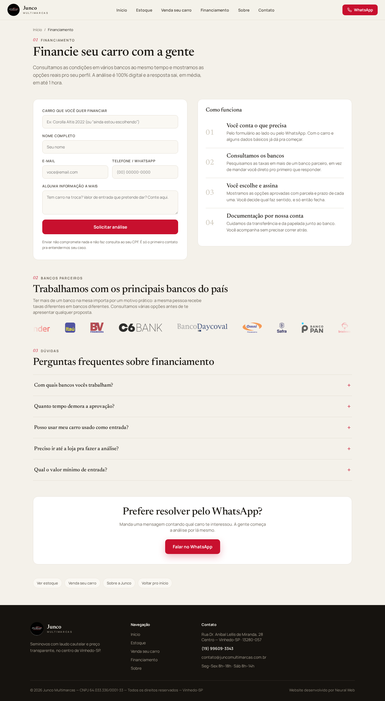

Sistema de Investigação de Marca e Identidade Online
https://juncomultimarcas.com.br/financiamento.html
Prioridade: MEDIUM · Cenário: B_AMBIGUOUS_COMMUNICATION · Revisão humana: PENDING
A página é de uma revendedora multimarcas legítima devidamente identificada com CNPJ. Embora não haja risco de personificação do Banco BV, a empresa utiliza graficamente o logotipo antigo/legado da BV Financeira em seção de parceiros para captação de financiamentos sem cumprir os deveres de transparência da Resolução CMN nº 4.935/2021 (ausência de declaração expressa de correspondente bancário e contatos de ouvidoria). [Revisor: CONFIRM] A página pertence a uma revendedora de veículos seminovos (Junco Multimarcas) devidamente identificada com CNPJ e endereço físico em Vinhedo-SP. Na seção de 'Bancos Parceiros', a empresa exibe o logotipo legado da BV Financeira junto a outras instituições financeiras sem incluir as informações regulatórias exigidas pela Resolução CMN nº 4.935/2021 (ausência de declaração explícita de correspondente bancário e de canais de ouvidoria). Trata-se de vínculo/parceria comercial legítima no setor automotivo com comunicação ambígua sob a ótica regulatória, justificando a confirmação de REVIEW_REQUIRED.


| Ref | Tipo | Local | Conteúdo |
|---|---|---|---|
| E-URL | domain | url | URL final: https://juncomultimarcas.com.br/financiamento.html (domínio: juncomultimarcas.com.br) |
| E-DISC-001 | text | search_index | Índice de busca (grounding): juncomultimarcas.com.br — No âmbito da auditoria de conformidade regulatória (**Resolução CMN nº 4.935/2021**, que disciplina a atuação de correspondentes no país) e governança de marca do Banco BV / BV Financeira, foram identificadas páginas públicas de lojas multimarcas, revendas de veículos e promotoras que promovem linhas de financiamento de veículos com destaque para a marca | **URL:** `https://juncomultimarcas.com.br/financiamento` | **Como a marca é utilizada:** Página voltada ao financiamento de veículos seminovos com seção *"Trabalhamos com os principais bancos do país"*, listando em destaque a **BV Financeira** | Promete análise 100% digital com retorno rápido e direcionamento para formulário e WhatsApp | **Avaliação de Conformidade (CMN 4.935/2021):** Exibe apenas nome fantasia e endereço físico |
| E-SHOT-VIEWPORT | screenshot | viewport | evidence/C185429b032/attempt-1/viewport.png (sha256 cbab14ad263f44a1…) |
| E-SHOT-FULL | screenshot | page | evidence/C185429b032/attempt-1/fullpage.png (sha256 33ef6ddd20deced5…) |
| E-TITLE | title | head | Financiamento de carro seminovo em Vinhedo-SP | Junco Multimarcas |
| E-META-1 | meta | head | description: Financie seu carro seminovo na Junco Multimarcas, em Vinhedo-SP. Trabalhamos com os principais bancos do país, análise 100% digital e aprovação em média em até 1 hora. |
| E-META-2 | meta | head | og:site_name: Junco Multimarcas |
| E-META-3 | meta | head | og:title: Financiamento de carro seminovo em Vinhedo-SP | Junco Multimarcas |
| E-META-4 | meta | head | og:description: Trabalhamos com os principais bancos do país. Análise 100% digital e aprovação em média em até 1 hora. |
| E-CANONICAL | meta | head | https://juncomultimarcas.com.br/financiamento.html |
| E-HEAD-1 | heading | page | Financie seu carro com a gente |
| E-HEAD-2 | heading | page | Como funciona |
| E-HEAD-3 | heading | page | Trabalhamos com os principais bancos do país |
| E-HEAD-4 | heading | page | Perguntas frequentes sobre financiamento |
| E-HEAD-5 | heading | page | Prefere resolver pelo WhatsApp? |
| E-FOLD | text | viewport (acima da dobra) | Junco MULTIMARCAS Início Estoque Venda seu carro Financiamento Sobre Contato WhatsApp Início / Financiamento 01 Financiamento Financie seu carro com a gente Consultamos as condições em vários bancos ao mesmo tempo e mostramos as opções reais pro seu perfil. A análise é 100% digital e a resposta sai, em média, em até 1 hora. Deixe este campo em branco Carro que você quer financiar Nome completo E-mail Telefone / WhatsApp Alguma informação a mais Solicitar análise Enviar não compromete nada e não faz consulta ao seu CPF. É só o primeiro contato pra entendermos seu caso. Como funciona 01 Você conta o que precisa Pelo formulário ao lado ou pelo WhatsApp. Com o carro e alguns dados básicos já dá pra começar. 02 Consultamos os bancos Pesquisamos as taxas em mais de um banco parceiro, em vez de mandar você direto pro primeiro que responder. 03 Você escolhe e assina Mostramos as opções aprovadas com parcela e prazo de cada uma. Você decide qual faz sentido, e só então fecha. 04 Documentação por nossa conta Cuidamos da transferência e da papelada junto ao banco. Você acompanha sem precisar correr atrás. |
| E-FTR | text | footer | Junco MULTIMARCAS Seminovos com laudo cautelar e preço transparente, no centro de Vinhedo-SP. Navegação Início Estoque Venda seu carro Financiamento Sobre Contato Rua Dr. Aníbal Lellis de Miranda, 28 Centro — Vinhedo-SP · 13280-057 (19) 99609-3343 contato@juncomultimarcas.com.br Seg–Sex 8h–18h · Sáb 8h–14h © 2026 Junco Multimarcas — CNPJ 64.033.336/0001-33 — Todos os direitos reservados — Vinhedo-SP Website desenvolvido por Neural Web |
| E-NAV | nav | header | Junco MULTIMARCAS <https://juncomultimarcas.com.br/index.html> | Início <https://juncomultimarcas.com.br/index.html> | Estoque <https://juncomultimarcas.com.br/estoque/> | Venda seu carro <https://juncomultimarcas.com.br/venda-seu-carro.html> | Financiamento <https://juncomultimarcas.com.br/financiamento.html> | Sobre <https://juncomultimarcas.com.br/sobre.html> | Contato <https://juncomultimarcas.com.br/#contato> | WhatsApp <https://wa.me/5519996093343?text=Ol%C3%A1!%20Vim%20pelo%20site%20e%20quero%20simular%20um%20financiamento.> |
| E-CTA-1 | cta | nav | WhatsApp <https://wa.me/5519996093343?text=Ol%C3%A1!%20Vim%20pelo%20site%20e%20quero%20simular%20um%20financiamento.> |
| E-CTA-2 | cta | page | Solicitar análise |
| E-CTA-3 | cta | page | Falar no WhatsApp <https://wa.me/5519996093343?text=Ol%C3%A1!%20Vim%20pelo%20site%20e%20quero%20simular%20um%20financiamento.> |
| E-CONTACT-1 | contact | nav | WhatsApp <https://wa.me/5519996093343?text=Ol%C3%A1!%20Vim%20pelo%20site%20e%20quero%20simular%20um%20financiamento.> |
| E-CONTACT-2 | contact | page | Falar no WhatsApp <https://wa.me/5519996093343?text=Ol%C3%A1!%20Vim%20pelo%20site%20e%20quero%20simular%20um%20financiamento.> |
| E-IMG-1 | image | nav (acima da dobra) | imagem alt='Junco' src=https://juncomultimarcas.com.br/assets/junco-logo-256.webp (44x44, acima da dobra) |
| E-IMG-2 | image | page | imagem alt='BV Financeira' src=https://juncomultimarcas.com.br/assets/bancos/bv-v4.png (47x36, abaixo da dobra) |
| E-IMG-3 | image | footer | imagem alt='Junco' src=https://juncomultimarcas.com.br/assets/junco-logo-256.webp (48x48, abaixo da dobra) |
| E-TXT-001 | text | page | |
| E-TXT-002 | text | page | Consultamos as condições em vários bancos ao mesmo tempo e mostramos as opções reais pro seu perfil. A análise é 100% digital e a resposta sai, em média, em até 1 hora. |
| E-TXT-003 | text | page | TELEFONE / WHATSAPP |
| E-TXT-004 | text | page | Pelo formulário ao lado ou pelo WhatsApp. Com o carro e alguns dados básicos já dá pra começar. |
| E-TXT-005 | text | page | Consultamos os bancos |
| E-TXT-006 | text | page | Pesquisamos as taxas em mais de um banco parceiro, em vez de mandar você direto pro primeiro que responder. |
| E-TXT-007 | text | page | Cuidamos da transferência e da papelada junto ao banco. Você acompanha sem precisar correr atrás. |
| E-TXT-008 | text | page | BANCOS PARCEIROS |
| E-TXT-009 | text | page | Trabalhamos com os principais bancos do país |
| E-TXT-010 | text | page | Ter mais de um banco na mesa importa por um motivo prático: a mesma pessoa recebe taxas diferentes em bancos diferentes. Consultamos várias opções antes de te apresentar qualquer proposta. |
| E-TXT-011 | text | page | Com quais bancos vocês trabalham? |
| E-TXT-012 | text | page | Prefere resolver pelo WhatsApp? |
| E-TXT-013 | text | page | Falar no WhatsApp |
| E-TXT-014 | text | page | © 2026 Junco Multimarcas — CNPJ 64.033.336/0001-33 — Todos os direitos reservados — Vinhedo-SP |
| Dimensão | Sinal | Achado | Refs |
|---|---|---|---|
| VISUAL_IDENTITY | LEGITIMATE | Identidade visual própria da revendedora Junco Multimarcas é dominante em toda a página, sem cópia de layout ou elementos institucionais do Banco BV. | E-TITLE E-SHOT-VIEWPORT E-SHOT-FULL E-IMG-1 |
| DECLARED_COMMERCIAL_IDENTITY | LEGITIMATE | Estabelecimento comercial plenamente identificado com nome fantasia Junco Multimarcas, endereço físico em Vinhedo-SP e CNPJ 64.033.336/0001-33. | E-FTR E-TXT-014 |
| LOGO_USAGE | CONFUSION | Exibição do logotipo legado da BV Financeira (B vermelho e V azul) em bloco de bancos parceiros ao lado de outras instituições financeiras. | E-IMG-2 E-SHOT-FULL |
| CORRESPONDENT_TRANSPARENCY | CONFUSION | A loja capta dados e solicita análise de crédito para múltiplos bancos parceiros sem esclarecer a natureza jurídica da relação de correspondente bancário perante a Resolução CMN nº 4.935/2021. | E-TXT-002 E-TXT-006 E-TXT-008 E-TXT-010 |
| INSTITUTIONAL_LANGUAGE | NEUTRAL | Linguagem voltada à captação de clientes para revenda de veículos seminovos, sem simulação de canal oficial bancário. | E-HEAD-1 E-TXT-002 E-TXT-006 |
| SERVICE_JOURNEY | NEUTRAL | Formulário inicial para captação de leads de financiamento veicular direcionado à equipe da própria revenda. | E-FOLD E-CTA-2 E-SHOT-VIEWPORT |
| CONTACT_CHANNELS | LEGITIMATE | Canais de contato próprios da revendedora Junco Multimarcas (WhatsApp, telefone e e-mail locais). | E-CONTACT-1 E-FTR |
| CONSUMER_CONFUSION | NEUTRAL | Risco de impersonação direto baixo, pois o consumidor entende que negocia com uma loja multimarcas, persistindo ambiguidade regulatória quanto ao credenciamento como correspondente. | E-SHOT-FULL E-TXT-009 |
A página é de uma revendedora multimarcas legítima devidamente identificada com CNPJ. Embora não haja risco de personificação do Banco BV, a empresa utiliza graficamente o logotipo antigo/legado da BV Financeira em seção de parceiros para captação de financiamentos sem cumprir os deveres de transparência da Resolução CMN nº 4.935/2021 (ausência de declaração expressa de correspondente bancário e contatos de ouvidoria).
Empresa identificada na página sem declaração de relação de correspondente; anunciar produtos da marca não comprova vínculo.
| Tipo | Valor | Ref | Contexto |
|---|---|---|---|
| domain | juncomultimarcas.com.br | E-URL | |
| cnpj | 64.033.336/0001-33 | E-FTR | · 13280-057 (19) 99609-3343 contato@juncomultimarcas.com.br Seg–Sex 8h–18h · Sáb 8h–14h © 2026 Junco Multimarcas — CNPJ 64.033.336/0001-33 |
| contato@juncomultimarcas.com.br | E-FTR | ||
| trade_name | Junco Multimarcas | E-META-2 | |
| phone | (19) 99609-3343 | E-FTR | |
| Índice de busca (grounding): juncomultimarcas.com.br — No âmbito da auditoria de conformidade regulatória (**Resolução CMN nº 4.935/2021**, que disciplina a atuação de correspondentes no país) e gover | E-DISC-001 | ||
| WhatsApp <https://wa.me/5519996093343?text=Ol%C3%A1!%20Vim%20pelo%20site%20e%20quero%20simular%20um%20financiamento.> | E-CONTACT-1 | ||
| Falar no WhatsApp <https://wa.me/5519996093343?text=Ol%C3%A1!%20Vim%20pelo%20site%20e%20quero%20simular%20um%20financiamento.> | E-CONTACT-2 |
Mapeamento indicativo para apoio à auditoria. Não constitui conclusão regulatória; a decisão definitiva pertence à auditoria.
Fonte: NORMATIVE
Art. 14. O contrato de correspondente deve estabelecer: [...] II - vedação à utilização, pelo contratado, de logomarca ou de outros atributos que sejam similares aos adotados pela instituição contratante em suas agências, postos de atendimento, sítio eletrônico na internet, aplicativo ou outras plataformas de comunicação em rede;
Hipótese: Uso de logomarca, uso excessivo/desproporcional ou de atributos similares aos adotados pela contratante em seus canais. A norma disciplina correspondentes contratados; o responsável não foi identificado como correspondente.
Evidência observada: E-IMG-2 E-SHOT-FULL
Informação faltante:
Fonte: NORMATIVE
Art. 14. O contrato de correspondente deve estabelecer: [...] III - divulgação ao público, pelo contratado, de sua condição de prestador de serviços à instituição contratante, identificada pelo nome com que é conhecida no mercado, com descrição dos produtos e serviços oferecidos e canais de contato da instituição contratante, inclusive de sua ouvidoria, em local visível, em destaque e em formato legível, por meio de: a) sítio eletrônico do correspondente na internet, acessível na página inicial; b) aplicativo e outras plataformas de comunicação em rede do correspondente; [...]
Hipótese: Divulgação ao público da condição de prestador de serviços/parceria ausente, insuficiente, ambígua ou sem destaque. A norma disciplina correspondentes contratados; o responsável não foi identificado como correspondente.
Evidência observada: E-FTR E-HEAD-3 E-TXT-002 E-TXT-006 E-TXT-008 E-TXT-009 E-TXT-010
Informação faltante:
Fonte: NORMATIVE
Art. 3º O correspondente atua por conta e sob as diretrizes da instituição contratante, que assume inteira responsabilidade pelo atendimento prestado aos clientes e usuários por meio do contratado.
Evidência observada: E-CONTACT-1 E-FTR
Se o responsável não for correspondente contratado, os indícios podem caracterizar uso indevido de marca ou fraude, fora do escopo da Res. 4.935: avaliar encaminhamento às áreas jurídica/segurança.
Limitações: requisitos contratuais/internos não fornecidos: mapeamento limitado ao texto normativo
Decisão: CONFIRM → REVIEW_REQUIRED / MEDIUM
A página pertence a uma revendedora de veículos seminovos (Junco Multimarcas) devidamente identificada com CNPJ e endereço físico em Vinhedo-SP. Na seção de 'Bancos Parceiros', a empresa exibe o logotipo legado da BV Financeira junto a outras instituições financeiras sem incluir as informações regulatórias exigidas pela Resolução CMN nº 4.935/2021 (ausência de declaração explícita de correspondente bancário e de canais de ouvidoria). Trata-se de vínculo/parceria comercial legítima no setor automotivo com comunicação ambígua sob a ótica regulatória, justificando a confirmação de REVIEW_REQUIRED.
| Tema | Severidade | Questionamento | Refs |
|---|---|---|---|
| Nenhum questionamento | |||
| Fonte | Consulta / hipótese | URL original | Título / trecho |
|---|---|---|---|
| grounding | Objetivo: Páginas de financiamento de veículos de lojas e multimarcas com destaque para a marca.
Execute no Google Search as seguintes consultas (dorks):
- inurl:financiamento "Banco BV" veículos -site:bv.com.br -site:bancobv.com.br -site:bvfinanceira.com.br -site:bvinvestimentos.com.br -site:napista.com.br -site:bvopen.com.br -site:meufinanciamentosolar.com.br -site:votorantim.com.br -site:vam.com.br -site:reclameaqui.com.br -site:jusbrasil.com.br -site:jus.br
- inurl:financiamento "bv financeira" (veículos OR seminovos OR multimarcas) -site:bv.com.br -site:bancobv.com.br -site:bvfinanceira.com.br -site:bvinvestimentos.com.br -site:napista.com.br -site:bvopen.com.br -site:meufinanciamentosolar.com.br -site:votorantim.com.br -site:vam.com.br -site:reclameaqui.com.br -site:jusbrasil.com.br -site:jus.br
- intitle:financiamento ("bv financeira" OR "Banco BV") veículos -site:bv.com.br -site:bancobv.com.br -site:bvfinanceira.com.br -site:bvinvestimentos.com.br -site:napista.com.br -site:bvopen.com.br -site:meufinanciamentosolar.com.br -site:votorantim.com.br -site:vam.com.br -site:reclameaqui.com.br -site:jusbrasil.com.br -site:jus.br
Liste de forma abrangente as páginas públicas encontradas (até 12 resultados distintos), informando para cada uma o nome do estabelecimento/perfil, a URL e como a marca é utilizada (destaque visual, título, feirão, simulador, redes sociais e se há ou não identificação clara de CNPJ e condição de correspondente bancário). H2-product:financiamento de veículos | https://juncomultimarcas.com.br/financiamento.html | juncomultimarcas.com.br No âmbito da auditoria de conformidade regulatória (**Resolução CMN nº 4.935/2021**, que disciplina a atuação de correspondentes no país) e governança de marca do Banco BV / BV Financeira, foram identificadas páginas públicas de lojas multimarcas, revendas de veículos e promotoras que promovem linhas de financiamento de veículos com destaque para a marca | **URL:** `https://juncomultimarcas.com.br/financiamento` | **Como a marca é utilizada:** Página voltada ao financiamento de veículos seminovos com seção *"Trabalhamos com os principais bancos do país"*, listando em destaque a **BV Financeira** | Promete análise 100% digital com retorno rápido e direcionamento para formulário e WhatsApp | **Avaliação de Conformidade (CMN 4.935/2021):** Exibe apenas nome fantasia e endereço físico |
Original: https://juncomultimarcas.com.br/financiamento.html
Final: https://juncomultimarcas.com.br/financiamento.html
| Artefato | Caminho | SHA-256 | Bytes |
|---|---|---|---|
| screenshot_viewport | evidence/C185429b032/attempt-1/viewport.png | cbab14ad263f44a1b6159b95a843233a978999de0bcf22372b50e43d437f79bb | 108421 |
| screenshot_full | evidence/C185429b032/attempt-1/fullpage.png | 33ef6ddd20deced5a43f34a33decd5c849602e142cf06c917ea217511d688d20 | 254695 |
| html | evidence/C185429b032/attempt-1/page.html.txt | 4de6ff6931a05b572747093c3e231f1d26cedcfea63459a33399f19605b40238 | 21216 |
| text | evidence/C185429b032/attempt-1/text.txt | 7cdaf1e6f52b054a9910e619fc30354b09a510b644ed677ce79395f0f7e9d9fd | 2336 |
| page_data | evidence/C185429b032/attempt-1/page.json | c2bf62ba23b3ef42f2b846c7449b9bc87262351f492c5fbf11e101648c28ead8 | 14379 |
| Quando | De | Para | Nota |
|---|---|---|---|
| 2026-11-25T18:12:10+00:00 | DISCOVERED | QUEUED | prioritised (score 1.0) |
| 2026-11-25T19:23:44+00:00 | QUEUED | COLLECTING | |
| 2026-11-25T19:23:48+00:00 | COLLECTING | COLLECTED | |
| 2026-11-25T19:23:48+00:00 | COLLECTED | ANALYZING | |
| 2026-11-25T19:24:08+00:00 | ANALYZING | REVIEWING | |
| 2026-11-25T19:24:22+00:00 | REVIEWING | COMPLETED |